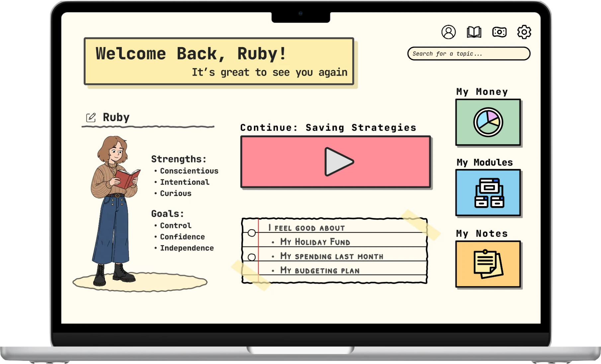
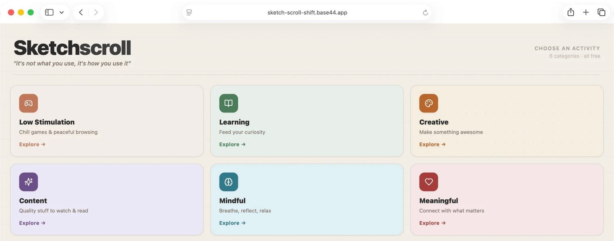

Hello! I'm Zara, a psychology-backed Product Designer.
Projects / Case studies
Selected work

Equil: Closing the Financial Literacy Gap with Research-Informed Design
Read case study →

Sketchscroll: A Psychologically Informed Solution to Brainrot Using AI
Read case study →
Reframing Neurodivergence In Schools
A Systems-Thinking Approach to Reducing Student Exclusions
Read case study →
Risky Driving Research
Social Influences and Risky Driving
Read case study →
Claude Code, Github, Design Systems, Complex data & B2B interface design, Rapid prototyping & iteration, Developer handoff & collaboration, Design QA, Stakeholder management, End-to-end UX/UI design.
An equitable financial literacy tool designed with and for young women.
User Research, Persona, Development, Wireframing, Prototyping, Usability Testing.
UX Artefact Translation, Inclusive Design Thinking, Service Interventions.
Using telematics to analyse how social context shapes driver behaviour.
About
A little about me
I am a curious and empathy-driven product designer, passionate about psychology, philosophy and the relationships humans forge with ourselves, others, and the world around us.